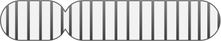

Real-Time Interactive Genomic Analysis
Full analysis of genome scale big data takes hours to weeks and is often overkill.
IOBIO will enable you to analyze specific genomic regions, for example a gene, in real time.
Use different algorithms and play with parameters to explore your data!
Real-time variant calling on alignment data on the Amazon cloud ...
(hover for details, slide to recall)
Real-time analysis
Full analysis of large data-sets typically takes a long time, from minutes to even weeks.
However, full analysis is often overkill and dissuades researchers from exploring the data (e.g. with different software, parameters or visually).
iobio achieves realtime analysis by focusing on small but meaningful amounts of data.
Analysis Modalities
Regional Analysis

Sampling Analysis

iobio utilizes two different strategies for extracting meaning out of data-sets in real time (1)
Regional analyses analyze a single “slice” or region (e.g 100kb) of a possibly very large dataset.
This is useful for researchers, especially those without computational expertise, to analyze those portions of vast biomedical datasets that are
essential for their research (e.g. alignment data from the region of a single gene, rather than a whole chromosome). For a demo see the
Variant Comparer Demo, which compares two tools and a truth set.
(2)
Sampling analyses request and analyze many small slices randomly selected from a large data file, and use these slices to estimate
relevant characteristics of the larger dataset (e.g. average sequence coverage, or the distribution of fragment sizes in a whole-genome sequencing dataset), in real-time.
Sampling works well for many statistical analyses of large datasets, and sampling-based approximation often approaches the precise result very quickly (within seconds).
A good example can be seen in
http://bam.iobio.io.
Visually Driven Analysis
Often the first pass of an analysis does not provide optimal results, and analysis needs to be repeated, sometimes multiple times.
Real-time analysis enables users the ability to complete the analysis quickly, visually examine the results and the quality summaries,
and if necessary, interactively reanalyze in real time. The immediate visualization of the results can provoke new questions and
further analyses, creating an iterative and exploratory process.